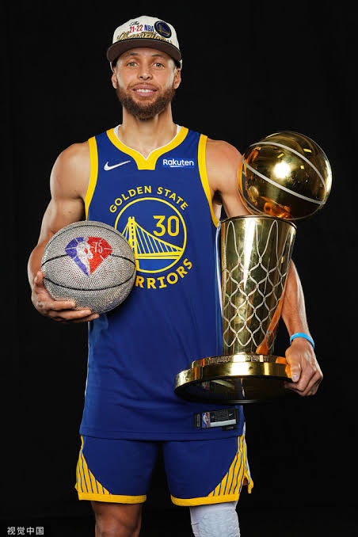

Name:Wardell Stephen Curry II

Birthday:1988/03/14
Height/Weight:188 cm/ 84 kg
NBA Draft:Selected 7th overall in the first round of the 2009 draft by the Golden State Warriors.

Stephen Curry comes from a basketball family, and his family background has profoundly influenced both his professional career and his personal character.

Professional Background:** Dell Curry was a renowned NBA sharpshooter during the 1980s and 1990s. He played 16 seasons in the NBA, primarily with the Charlotte Hornets, and was named the NBA Sixth Man of the Year for the 1993–94 season.
Curry grew up around NBA basketball from an early age, with his father personally teaching him proper shooting form and fundamental skills. Dell’s signature quick release and elite shooting accuracy helped lay the foundation for Curry’s exceptional shooting ability.

**Professional Background:** Two years younger than Stephen Curry, Seth Curry is also a professional basketball player in the NBA. Although he went undrafted, Seth established himself in the league through his elite three-point shooting, maintaining a career three-point percentage that has consistently ranked among the league’s best.

NBA Championships:4 (2015, 2017, 2018, 2022)

NBA Finals Most Valuable Player (Finals MVP): 1 (2022)

NBA Regular Season Most Valuable Player (MVP): 2 times (2015, 2016)

Revolutionary Three-Point Range:** Curry extended the effective three-point shooting range to nearly half-court, popularizing the deep three-pointer known as the “Logo Shot” and forcing opposing defenses to extend their coverage significantly.
Lightning-Fast Release and Off-Ball Movement:** Curry possesses an exceptionally quick shooting release and elite off-ball movement. Even without the ball, his offensive gravity can draw double teams, creating numerous open scoring opportunities for his teammates.
Elite Ball-Handling and Floater Skills:** Beyond his perimeter shooting, Curry excels at changing pace and direction while handling the ball, as well as executing delicate floaters near the basket, giving him a versatile offensive scoring arsenal.